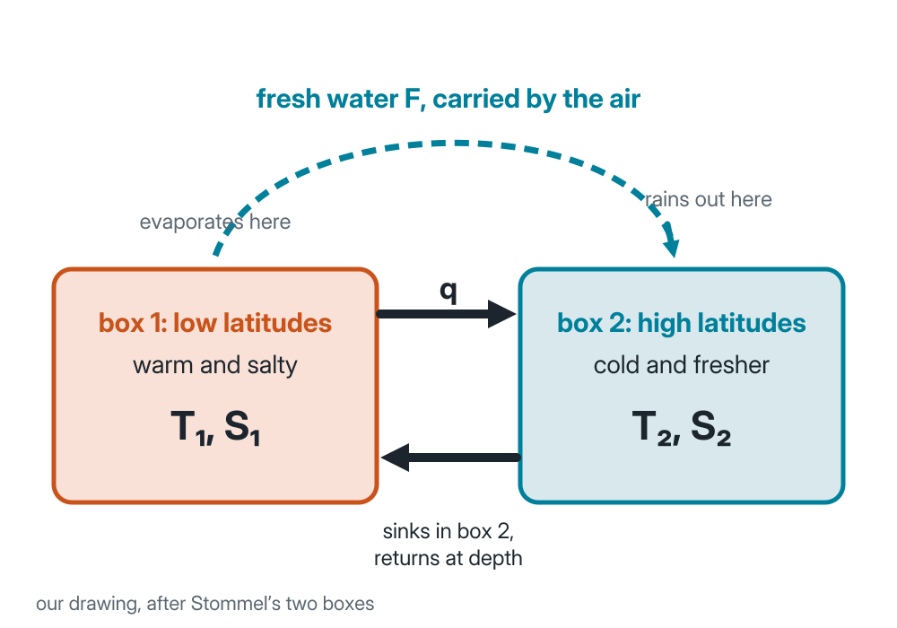
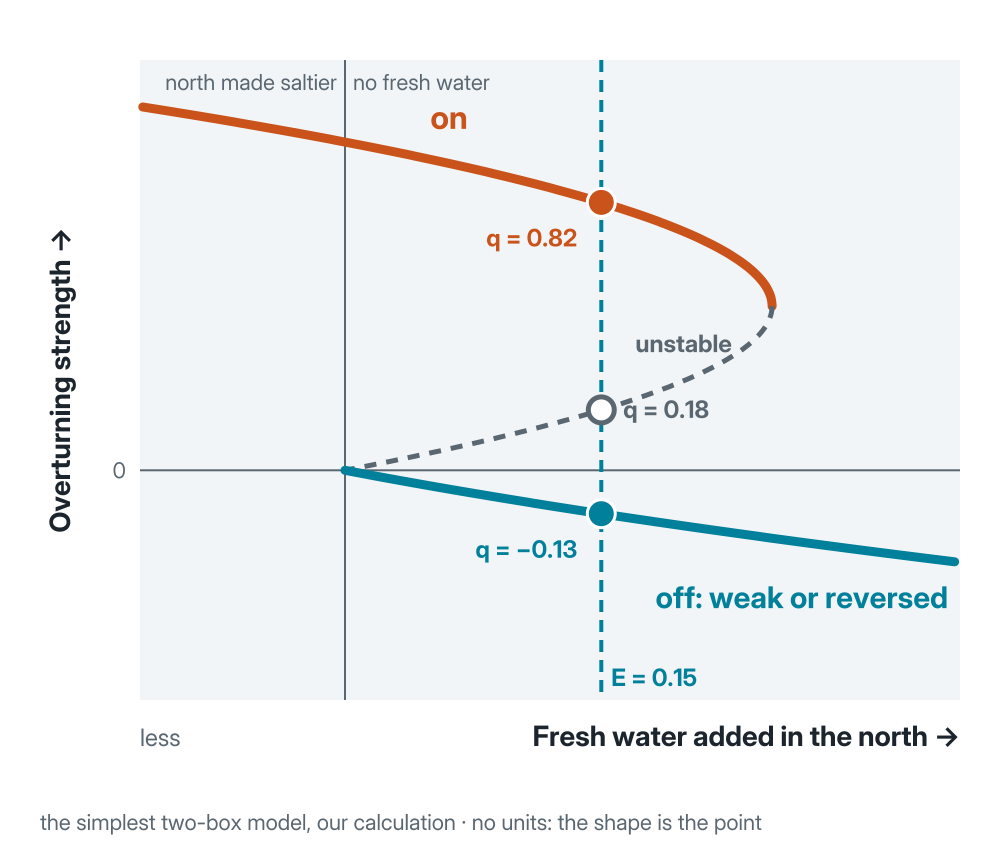
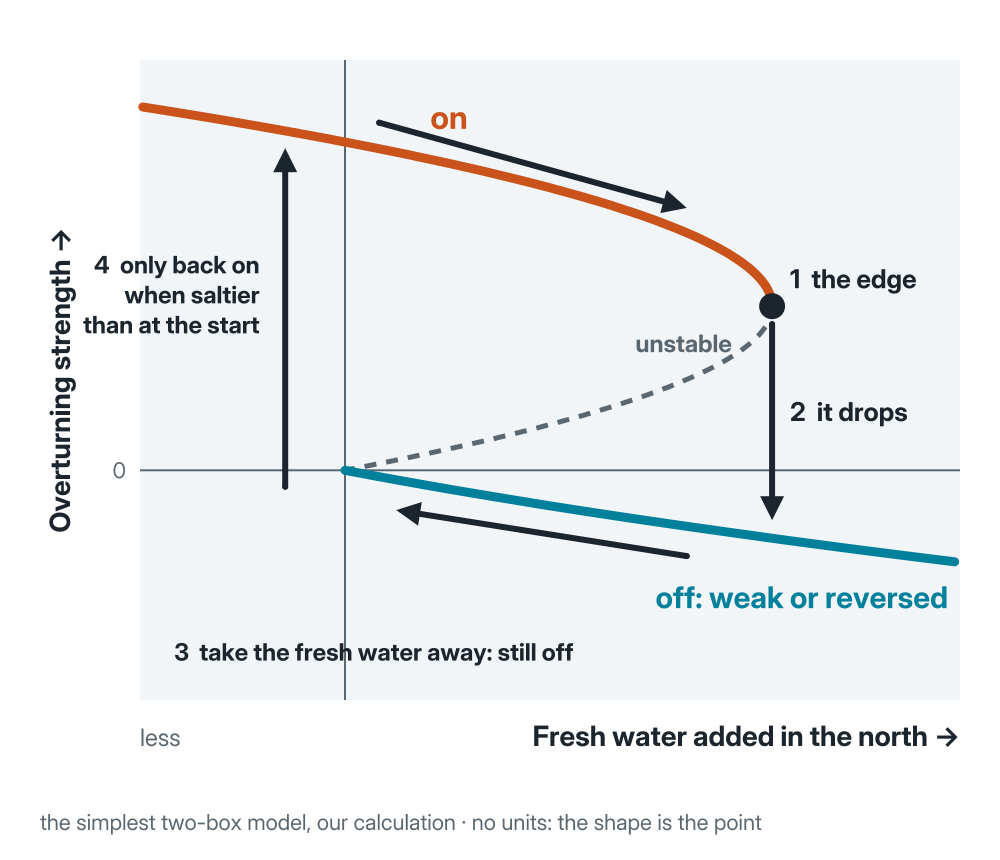

These notes follow the lecture as it was taught. Section 9, on Stommel’s two-box model, is much longer than the time it got in class. As promised, it goes through the model and its equations step by step, so that you can read the S-shaped figure from the slides for yourself. The parts of the plan we didn’t reach are at the end, under “Read this part”. The readings are extracts in the course’s shared readings folder, under O6.
The question
Dense water sinks in only a few places. Where does it go, what brings it back up, how long does the round trip take, and could the whole circulation stop?
1. Where we left off
Yesterday ended with two pole-to-pole sections of salinity, one through the Atlantic and one through the Pacific. In both oceans, the water near 60°S and 60°N is connected to the surface. Near Antarctica in both oceans, water sinks to the bottom: Antarctic Bottom Water lies on the floor of practically every major ocean. The difference is in the north. In the Atlantic, water from the far north reaches far below the top kilometre, as the salty tongue of North Atlantic Deep Water at 2–3 km. In the Pacific, nothing from the north gets that deep.
So far that is the data scientist’s hat: plot the data and find the patterns. Today we try to explain them.
2. The mass ledger: what sinks must come back up
When surface water sinks, mass moves from the upper ocean (roughly the top kilometre) into the deep ocean. Now put on the accountant’s hat. This can’t go on for ever in a steady state: if water kept leaving the upper ocean and never came back, the whole ocean would eventually become deep ocean. Yet there is still a warm, light upper ocean sitting on a cold, dense deep one. So wherever water goes down, the same amount must come up somewhere else.
That was a real puzzle for oceanographers. It is easy to see how surface water can become denser and sink: that was yesterday’s lecture. But the water that has to come back up is the densest water in the ocean, sitting at the bottom because it is the densest. Nothing obvious makes it rise. Today we look at the most important place where it does: the Southern Ocean (§5).
The whole loop has had several names. It used to be called the thermohaline circulation (thermo for heat, haline for salt), or the “global conveyor belt”, Wally Broecker’s name for it (Stewart p. 213). Stewart notes that oceanographers have largely dropped the word “thermohaline”, because the flow turns out not to be driven by density alone (p. 212). §5 shows why: the wind does much of the lifting. The name used now is the meridional overturning circulation (§6).
3. An aside: simple laws, complex climate
Yesterday we asked how climate science differs from physics, if both use the same laws. The slides drew the answer as a network.
A physicist writes one conservation law for each quantity: water, heat, salt, momentum and mass, each of the form “change in the store = in − out”. The laws for momentum and mass together are the equations of fluid motion, the Navier–Stokes equations (O4 notes, §3), and they can carry terms for heat and salt too. Each law on its own is simple.
A climate scientist needs to know how the budgets talk to each other. Take water vapour. Evaporation puts it into the air, the winds carry it, and it forms clouds and rains out: that is one conservation law. But evaporation takes energy, and how much water evaporates depends on the sea surface temperature, which depends on sunlight. Clouds block sunlight. Rain releases heat into the air, which changes the winds. Rain and rivers change the salinity, and salinity and temperature set the density. Density decides how deep the wind’s momentum can be stirred, and the wind decides where the heat and salt go. Every arrow in the network is simple. What the network does as a whole is not, and which arrows matter most can differ between climates, between planets, and between regions of the same planet. That is what we mean by a complex system, and it is why a fluid mechanics course in a physics department and a geophysical fluid dynamics course in a climate science department look at the same equations very differently.
Today’s switch (§9) is one loop at the bottom of that network: density drives the overturning, the overturning carries salt, and salt sets density.
4. Why the North Atlantic sinks and the North Pacific doesn’t
Sea ice forms at high latitudes in both hemispheres, so surface water in every ocean gets cold enough to freeze (Stewart p. 215). Recall from yesterday that seawater keeps getting denser as it cools, right down to its freezing point, and that the ice it forms is almost fresh and floats. So the densest surface water is the water closest to freezing. Temperature therefore can’t be what separates the North Atlantic from the North Pacific: both get as cold as seawater can get. The difference has to be salinity.
The slides showed this on a T–S diagram, using annual means from the WOCE climatology:
| Surface salinity | Cooled to freezing at that salinity | Water at 2,000 m below it | |
|---|---|---|---|
| North Atlantic (50–65°N, 40–10°W) | 35.1 g/kg | σ 28.2 | σ 27.8 |
| North Pacific (45–55°N, 160°E–140°W) | 32.8 g/kg | σ 26.4 | σ 27.7 |
(σ is density minus 1,000 kg/m³, as in O5.) The North Pacific’s surface is about 2.3 g/kg fresher. Take each surface water, keep its salinity and cool it. The North Atlantic’s becomes as dense as the water 2 km below it once it is cooled below about 4 °C, well before it freezes. The North Pacific’s can be cooled all the way to freezing (about −1.8 °C) and is still lighter than the deep water beneath it, so it can’t sink far. Stewart puts it in one line: cold, dense water does form in the North Pacific, but it isn’t salty enough to sink to the bottom (p. 211). Oxygen tells the same story: high oxygen reaches great depths in the North Atlantic, while the North Pacific shows no sign of water sinking from the surface (Hartmann p. 222, Fig. 7.16).
Why is the North Pacific so fresh? That is yesterday’s ledger (O5 notes, §4). The trade winds carry water vapour from the Atlantic across Central America, and it rains out over the Pacific. The atmosphere removes fresh water from the Atlantic and adds it to the Pacific, making the Atlantic saltier and the Pacific fresher. The atmosphere’s export of fresh water is what lets the Atlantic overturn. You saw the same principle in the Bay of Bengal: put fresh water on top, and it won’t mix down or sink.
The North Atlantic recipe is to cool salty water. The Gulf Stream carries warm, salty water far north, into the Norwegian and Greenland Seas, where very cold air cools it until it is dense enough to sink (Hartmann p. 224; the Labrador Sea also contributes). Brine from sea ice is the recipe around Antarctica (O5 notes, §7).
This is the arrangement in today’s climate. The physics doesn’t change, but the ledger depends on where the continents are and where the rain falls (O5 notes, §4), and when those were different, so was the arrangement.
5. Coming back up: the Southern Ocean
Go back to the Atlantic section, and add the lines of equal density (in the slides, the four lines Hartmann draws in his Fig. 7.17). Below the mixed layer, mixing is very weak, so deep water moves almost entirely along surfaces of constant density (Hartmann p. 225). To a first approximation, water doesn’t cross from one density surface to another. In the north and the tropics these surfaces lie flat and deep. South of about 45°S they tilt up and reach the surface.
Now recall Wednesday’s lecture (O4). Around Antarctica the westerly winds are very strong (Hartmann p. 225). In the Southern Hemisphere, Ekman transport is to the left of the wind, so the westerlies push the surface water north, away from Antarctica, and it is the same all the way round the continent. Something has to replace that water, and it can only come from below. The winds are strong enough to pull water up from a kilometre down and more. On Wednesday’s Ekman pumping map this was the band of upwelling south of about 50°S.
Put the two together. The deep water from the North Atlantic flows south along its density surfaces at 2–3 km, and where those surfaces rise to meet the mixed layer, near 60°S, the wind-driven upwelling brings it back to the surface (Hartmann pp. 222, 225, after Marshall and Speer 2012). In the section you can see a tongue of this water rising towards the surface. The same wind physics as on Wednesday closes the mass ledger of the deep ocean.
What happens to the water once it is back at the surface?
- Part of it flows towards Antarctica, where it becomes very cold and, with brine from sea ice, dense enough to sink to the bottom again as Antarctic Bottom Water.
- Part of it is pushed north, by the same Ekman transport. It is less dense, and where Ekman transport converges, north of the westerlies, it is pushed down again to about 1 km. This is the fresh Antarctic Intermediate Water from yesterday (Hartmann pp. 222, 225–227). Water pushed down from the surface mixed layer like this is said to be subducted, the same word geologists use for one tectonic plate sliding beneath another. Water keeps piling up and being pushed down there, so it has to keep moving, and it flows north.
Hartmann sums it up: the Southern Ocean is the key region both for forming bottom water and for bringing deep water back to the surface (p. 225).
An analogy (ours). Water sinks in one place, travels at depth, is pulled up somewhere else and returns at the surface: this is an overturning cell, a bit like the atmosphere’s Hadley cell. The physics that drives it is different. And there is a bigger difference: the Hadley circulation comes as a pair of cells, roughly mirror images on either side of the equator. The Atlantic overturning is one loop that runs from the Southern Ocean to the far North Atlantic and back.
6. The AMOC, and why the ITCZ is north of the equator
This loop is the Atlantic Meridional Overturning Circulation, the AMOC, one of the most popular acronyms in climate science. Some vocabulary: meridional means across latitudes (north–south, along the meridians); zonal means along latitudes (east–west). The trade winds are mostly zonal; the Hadley cell is mostly meridional.
Unlike the Hadley cells, which move heat towards both poles, the AMOC moves heat from one hemisphere to the other. Warm surface water flows north through the whole Atlantic, and cold deep water flows south. So the Atlantic carries heat northward everywhere, even south of the equator (Stewart p. 214). Stewart’s rough sum: the Gulf Stream carries 40 Sv of 18 °C water north, and 14 Sv of it returns south in the deep western boundary current at 2 °C, so the Atlantic north of 24°N must lose about 0.9 petawatts to the atmosphere (1 PW = 10¹⁵ W), close to a more careful estimate of 1.2 ± 0.2 PW (p. 214). Here 1 Sv (a sverdrup) is a million cubic metres of water a second.
Back to a question from one of the first classes: why is the ITCZ north of the equator, on average? This ocean heat transport is thought to be a large part of the answer. By carrying heat from the Southern Hemisphere to the Northern, it keeps the Northern Hemisphere warmer on average. The Hadley circulation carries energy from the tropics towards the poles, and its rising branch, the ITCZ, sits on the warmer side, so that the atmosphere carries some of that extra heat back across the equator to the colder hemisphere. The ocean moves heat north across the equator; the ITCZ shifts north so that the atmosphere can move some of it back.
So a circulation that changes how energy is shared between the hemispheres has consequences far beyond the Atlantic. That is why the AMOC is one of the most intensively studied features of the ocean.
7. A thousand-year memory
Put a drop of water into the sinking region of the North Atlantic. How long before it is back at the surface? The time to replace the deep ocean’s water is about a thousand years (Hartmann p. 225, who calls it the ocean’s turnover time). This is the ocean’s long memory: whatever the deep water carries with it when it sinks, it keeps for centuries.
That includes carbon dioxide. Cold water holds more dissolved CO₂ than warm water. The ocean holds about 50 times as much carbon as the atmosphere, and the cold deep water is where most of its dissolved CO₂ is stored (Stewart pp. 212–213). CO₂ taken up by water that sinks in the North Atlantic is out of contact with the atmosphere for centuries. And the deep water now coming back up has not seen the atmosphere for centuries either, so it doesn’t yet “know” about today’s CO₂. The ocean and the atmosphere are far from balance at the moment, and it will take the ocean’s turnover time for them to settle. This is one reason why some climate scientists worry more about CO₂ than about methane. Methane is a more powerful greenhouse gas molecule for molecule, but it is broken down in the atmosphere within about a decade (atmospheric methane). The extra CO₂ goes on warming for as long as it stays, and warming adds up over time.
How do we know how old the water is? By tracers that change at a known rate once water leaves the surface. Oxygen is one: below the surface it is used up by living things, so the more depleted it is, the longer the water has been away from the air (Hartmann pp. 221–222). The difficulty is that the rate depends on how much life there is, and very old water may have little oxygen left. So oceanographers also use radiocarbon (carbon-14), which decays at a precisely known rate, and man-made gases such as CFCs, which entered the atmosphere from the mid-twentieth century and so mark water that was at the surface since then (Hartmann p. 224). You will meet isotope tracers like these again later in the course, in geochemistry and paleoclimate.
Where is the oldest water? See “Read this part”.
8. Measuring it: RAPID
Since 2004 a line of moorings has measured the overturning across the whole Atlantic at 26.5°N, from Florida to Africa: the RAPID array. A mooring is an anchor on the sea floor and a long cable held up by a buoy, with instruments, including current meters, fixed at different depths. Cable measurements of the Florida Current and satellite winds add the rest.
Over twenty years (April 2004 to March 2024) the northward flow in the upper ocean has averaged 17 Sv. It is never still: the 10-day values range from about −4 to 32 Sv, and yearly means from about 15 Sv (2009) to 19 Sv (2006). There are no small numbers in the ocean.
9. Can it switch off? Stommel’s two boxes
This section goes well beyond what we did in class.
9.1 The idea in words
Here is the picture from class. In the subtropics, evaporation makes the surface water salty. The ocean carries that salty water north. On the way it cools, and rain and rivers freshen it a little. Eventually it is dense enough to sink, and it returns south at depth. From §4, it sinks because it is salty: the temperatures in the far north of both oceans are about the same, but the salt is not.
Now suppose more fresh water reaches the far North Atlantic, say near Greenland. The surface there gets lighter, so less of it sinks and the overturning weakens. A weaker overturning brings less salty water north, so the north gets fresher still, and the overturning weakens further. This is a positive feedback: a change that produces more of itself. Push it far enough and the overturning could stop.
To see when “far enough” is, and what happens next, we need a model. The simplest is a pair of boxes, after the oceanographer Henry Stommel, who first studied this kind of model in 1961. The version below is simplified further, and the working is ours.
9.2 Two boxes

Figure 1. The two boxes and the symbols used below. Our drawing.
Box 1 is the low latitudes, warm and salty, with temperature T₁ and salinity S₁. Box 2 is the high latitudes, cold and fresher, with T₂ and S₂. The two boxes have the same volume V. Two things connect them:
- The atmosphere takes fresh water out of box 1 by evaporation and rains it into box 2, at a rate F (cubic metres of water per second).
- The ocean circulates between them at a rate q (also in cubic metres per second): along the surface from box 1 to box 2, down in box 2, and back at depth. Positive q means water sinks in the cold box, as in today’s Atlantic.
We make three assumptions.
(1) The temperatures are fixed. The atmosphere sets the surface temperature of each box, quickly and firmly, by exchanging heat with it. So T₁ and T₂ don’t change. Salinity is different: nothing in the atmosphere responds to the salinity of the sea, so the salinities are free to change.
(2) Density depends on temperature and salinity in a simple way. From O5, warming makes water lighter and salt makes it heavier. In the model we take each effect to be proportional:
ρ = ρ₀ (1 − αT + βS)
where ρ₀ is a reference density, α (alpha) is how much lighter water gets per degree of warming, and β (beta) is how much heavier it gets per gram of salt per kilogram. The table in the O5 notes gave you ρ₀α and ρ₀β near freezing: about 0.054 kg/m³ per °C and 0.80 kg/m³ per g/kg. (The real equation of state is curved; this is a straight-line approximation to it.)
Write the contrasts between the boxes as ΔT = T₁ − T₂ (positive: box 1 is warmer) and ΔS = S₁ − S₂ (positive when box 1 is saltier). Then the cold box is denser than the warm box by
ρ₂ − ρ₁ = ρ₀ (αΔT − βΔS)
The temperature contrast makes the cold box heavier. The salt contrast makes it lighter, because box 2 is the fresher one. The two contrasts work against each other.
(3) The flow is proportional to the density difference. The denser the cold box is compared with the warm one, the harder its water sinks and the faster the loop turns:
q = k (αΔT − βΔS)
Here k is a constant that says how easily the water flows. This is the model’s boldest assumption: it says that the flow is driven by density differences alone (we come back to that in §9.9). Note what this equation already says. If salt cancelled the temperature contrast exactly (βΔS = αΔT), there would be no flow. If the salt contrast were even larger, q would be negative: the flow would run backwards, sinking in the warm, salty box.
9.3 The salt ledger
Temperatures are fixed, so the only ledger we need is salt. Keep the accountant’s hat on and write the salt budget of box 2:
V dS₂/dt = |q| (S₁ − S₂) − F S₀
Term by term:
- V dS₂/dt is the change in box 2’s salt: its volume times the rate at which its salinity changes.
- |q| (S₁ − S₂): the ocean flow brings water of salinity S₁ into box 2 and takes water of salinity S₂ out, at the rate q. The net salt brought in is q times the difference. If the loop ran backwards, water would still go in at S₁ and out at S₂, just by the other path. So only the size of q matters, written |q| (the absolute value). The flow always wipes out the contrast.
- − F S₀: the rain adds fresh water but no salt. Adding fresh water at the rate F dilutes the box exactly as much as removing salt at the rate F S₀ would, where S₀ (about 35 g/kg) is a typical salinity. Modellers use this trick so that the volume of the box can stay fixed.
Box 1’s budget is the mirror image: the flow brings it fresher water, and evaporation concentrates its salt. Subtract one from the other and we get the budget for the contrast:
V dΔS/dt = 2 (F S₀ − |q| ΔS)
This is the whole model in one line. The atmosphere builds the salt contrast (evaporating from box 1 and raining into box 2), and the ocean’s flow wipes it out (by carrying salty water north and fresher water south).
9.4 The steady state, and the feedback in it
In a steady state, the salt contrast doesn’t change, so the two terms balance:
|q| ΔS = F S₀
In words: the flow must carry exactly as much salt north as the rain would wash out.
This looks simple, but q depends on ΔS through assumption (3). The salt contrast sets the flow, and the flow sets the salt contrast. That is the feedback loop from §9.1, now written as an equation.
9.5 Getting rid of the units
The equation has a lot of constants in it: k, α, β, ΔT, S₀. They can all be swept into two numbers.
- Let y = βΔS / (αΔT). This is the salt contrast, measured as the fraction of the temperature’s density contrast that salt cancels. At y = 0 the boxes have the same salinity; at y = 1 salt cancels the temperature contrast completely.
- Then the flow is q = kαΔT (1 − y). The overturning, in units of kαΔT (the flow you would get with no salt contrast at all), is simply 1 − y.
- Put both into the steady-state balance. With a line of algebra (try it), it becomes
y × |1 − y| = E, where E = β S₀ F / (k α² ΔT²)
E is the fresh-water forcing, F, measured in the model’s own units. Everything else in that fraction is fixed, so turning up E means turning up the fresh water reaching the north.
That is why the figures have no units: only the combinations y and E matter, and the shape is the point. The model can’t tell us how many sverdrups of fresh water the real Atlantic could take. It can tell us what kind of behaviour to expect.
9.6 Solving it by eye
![The salt the flow carries, y times the absolute value of 1 minus y, plotted against the salt contrast y. It rises to a hump with a peak of one quarter at y equals one half, falls to zero at y equals one, and rises steeply after that. A horizontal line at fresh water E equals 0.15 crosses it three times: at y equals 0.18 (on), at 0.82 (unstable) and at 1.13 (reversed). Arrows along the line point towards the on and reversed states and away from the unstable one. A higher dashed line at E equals 0.34 crosses the curve only once, on the reversed side.](nb_balance.svg)
Figure 2. The steady salt balance, solved by eye. The curve is what the flow carries north; a horizontal line is what the fresh water does. Every crossing is a steady state. Our calculation.
The left-hand side, y × |1 − y|, is the salt the flow carries per second. Plot it against y (Figure 2, the purple curve):
- At small y, the flow is strong but there is little salt contrast for it to carry, so it carries little salt.
- Near y = 1, the contrast is large but there is almost no flow, so again it carries little.
- In between, it carries the most. The product peaks at y = ½, where it is ¼. That hump matters most.
- Beyond y = 1, the flow has reversed. It gets stronger as the salt contrast grows, so the salt it carries rises steeply again.
The right-hand side, E, is a horizontal line: the fresh water doesn’t depend on y. A steady state is any place where the line crosses the curve.
Take E = 0.15 (the solid line). It crosses three times:
| State | Salt contrast y | Overturning 1 − y | |
|---|---|---|---|
| On | 0.18 | 0.82 | sinking in the cold box, as today |
| Unstable | 0.82 | 0.18 | weak |
| Reversed | 1.13 | −0.13 | weak, and backwards |
Now raise the fresh water past E = ¼, the top of the hump (the dashed line at E = 0.34). The line no longer touches the left part of the curve at all. The “on” state no longer exists. Only the reversed one is left.
9.7 Which states last? The two feedbacks
A steady state is only interesting if the system stays there when something nudges it. Go back to the budget of §9.3. In the model’s units it says that the salt contrast changes at a rate proportional to
E − y × |1 − y|
that is, the fresh water building the contrast minus the flow wiping it out. So:
- Where the curve is below the line, the atmosphere builds the contrast faster than the flow removes it: y grows (arrows pointing right in Figure 2).
- Where the curve is above the line, the flow wins: y shrinks (arrows pointing left).
Follow the arrows. They point towards the “on” and the “reversed” states, and away from the unstable one. Nudge the “on” state and it comes back; nudge the unstable state and it runs away to one of the others.
Here is the physics behind the arrows. Two feedbacks are acting all the time, and the hump shows which one wins.
- On the rising side of the hump (y below ½): suppose a little extra rain makes the north fresher, so the salt contrast grows. The flow weakens a little, but the contrast it is carrying has grown by more, so the flow carries more salt north and wipes the extra contrast out. A negative feedback wins: the state is stable. This is the “on” state.
- On the falling side (y between ½ and 1): the same nudge weakens the flow so much that it carries less salt north, so the north gets fresher still. The positive feedback of §9.1 wins, and the state runs away.
So the positive feedback from class is real, but it takes over only past the top of the hump. That is why an overturning can weaken for a long time and then, quite suddenly, collapse.
9.8 The figure from the slides

Figure 3. The figure from the slides, with the three states for E = 0.15 marked. Our calculation.
The slide plotted the same steady states the other way round: the overturning, 1 − y, up the side, against the fresh water, E, along the bottom. Each point on the curve is a crossing from Figure 2. A vertical line at E = 0.15 cuts the curve three times, at the same three states: 0.82, 0.18 and −0.13 (Figure 3).
How to read it:
- The orange upper branch is “on”, the overturning running as it does today. It is the left-hand crossing of Figure 2.
- The grey dashed middle branch is unstable. The system never sits there; it marks the dividing line between the two stable states.
- The teal lower branch is “off”: in this model, weak and running backwards.
- The vertical line at zero is no fresh water at all. To its left the north is being made saltier rather than fresher.
- The upper branch ends at a “nose”, at E = ¼ and an overturning of ½. That is the top of the hump in Figure 2, where the stable and unstable states meet and vanish. Points like this are what people mean by a tipping point.
- Between zero and the nose, two stable states exist for the same fresh water. Which one you are in depends on your history.
Where is today’s Atlantic on this curve? Somewhere on the upper branch. How far from the nose, nobody knows well: that is the real question, and this toy can’t answer it.
9.9 Walking the hysteresis loop

Figure 4. The figure from the slides, with the hysteresis path. Our calculation.
Now do the experiment from class. Start on the upper branch with a little fresh water, and add more, very slowly (Figure 4).
- Freshen slowly. The state slides along the upper branch. The overturning weakens, from 1 with no fresh water to ½ at the nose. It gets weaker, but it doesn’t fade to zero: weakening is not the same as stopping.
- Pass the edge. Beyond E = ¼ there is no “on” state left (Figure 2). The system has nowhere to go but down, to the lower branch: the overturning drops from +0.5 to about −0.2, from running to reversed. In the model the switch is abrupt. The response is not proportional to the push: the last small amount of fresh water does almost all of the damage. Only a nonlinear system can do this; in a linear one the response is always proportional to the forcing.
- Take the fresh water away again. The system doesn’t retrace its path. It stays on the lower branch, still off, all the way back to zero fresh water. In Figure 2, the reversed crossing exists for every positive E.
- Only when the north is made saltier than it was with no fresh water at all (E below zero) does the “off” state vanish, and the overturning comes back on.
This path dependence is called hysteresis: where you end up depends on how you got there. You may have met it in magnets. Stewart describes the same behaviour for the real overturning, after the model studies of Rahmstorf (1995): once the circulation has shut off, a return to normal salinity is not enough to turn it on again; surface waters “must become saltier than average for the first state to return” (Stewart p. 218, Fig. 13.3, which draws the same loop with salinity and temperature as the axes). It is the same structure as the two stable states of a snowball Earth, earlier in the course: two stable states, a tipping point, and no easy way back.
How sensitive is the real thing? In Rahmstorf’s model, a change of only ±0.1 Sv in the fresh water reaching the North Atlantic could switch a 14 Sv circulation on or off (Stewart p. 215). For scale (our comparison), the atmosphere already carries about 0.32 Sv of fresh water from the Atlantic to the Pacific (O5 notes, §4).
9.10 What the toy leaves out
The two-box model is a cartoon, built to show one feedback clearly. Keep its limits in mind:
- The temperatures are fixed. In reality, a weaker overturning brings less heat north, so the north cools, and cooling makes its water denser. That pushes back against the salt feedback, and the atmosphere’s winds and rain change too.
- The flow is driven by density alone. §5 showed that in the real ocean, the Southern Ocean’s winds do much of the work of bringing deep water back up. That is exactly why oceanographers stopped calling it “thermohaline” (Stewart p. 212), and it may make the real overturning more or less stable than the toy suggests.
- “Off” in the real ocean is not a reversed flow. Stewart describes the second stable state as one in which deep water forms mostly near Antarctica, and water upwells in the far North Atlantic as it does in the North Pacific today (p. 218).
- The constants are unknown. The model can’t say how close the real Atlantic is to the nose. For that, climate scientists use full climate models, observations such as RAPID, and the record of the past.
10. Could it happen?
How would fresh water be added to the far North Atlantic? Global warming does it in two ways. A warmer atmosphere holds more water vapour, so more rain falls at high latitudes. And warming melts the ice sheets, above all Greenland’s, pouring fresh water into the sea.
It has happened before, without any help from us. During the last ice age, the climate around the North Atlantic changed abruptly many times. About 11,500 years ago, temperatures over Greenland rose by about 8 °C in 40 years (Stewart p. 216, after Alley 2000). In Heinrich events, huge numbers of icebergs broke off into the North Atlantic; their melt water is thought to have shut down the formation of North Atlantic Deep Water, leaving the North Atlantic very cold (Stewart pp. 216–218, Fig. 13.2). Exactly what triggered these changes is still argued over (Stewart p. 218). But they show that the overturning has changed quickly before: within decades, which is fast for climate.
Is it happening now? There is no conclusive answer. The scientific consensus is the IPCC’s: the AMOC “is very likely to weaken over the 21st century for all emissions scenarios”, but there is “medium confidence that there will not be an abrupt collapse before 2100” (IPCC AR6 WGI, Summary for Policymakers, C.3.4).
What would a collapse change? Go back to §6. The AMOC is what makes the ocean carry heat from the Southern Hemisphere to the Northern. Without it, the ITCZ no longer needs to sit north of the equator to carry some of that heat back, and it would be expected to shift south. The Indian monsoon is, in effect, the ITCZ moving north over South Asia in summer; with the ITCZ pulled south, that becomes harder. Nobody knows this from observation; it comes from climate models. If a collapse did happen, the IPCC expects changes such as “a southward shift in the tropical rain belt, weakening of the African and Asian monsoons and strengthening of Southern Hemisphere monsoons, and drying in Europe” (same paragraph, C.3.4). The Asian monsoon is ours.
Read this part: what we didn’t cover in class
How much water sinks
Hartmann estimates that deep water forms at about 15–20 Sv in the North Atlantic and about 10 Sv around Antarctica (p. 230). Compare the Gulf Stream, about 30 Sv off Florida (p. 229), and the Antarctic Circumpolar Current, about 125 Sv through Drake Passage (p. 225). So the overturning moves less water than the Gulf Stream, but it fills the whole deep ocean. One caution when you read p. 230: Hartmann says the deep circulation is “more than a factor of ten smaller” than the western boundary currents, but his own figures, about 30 Sv each for the Gulf Stream and the Kuroshio, make it only about three to four times smaller.
Where the oldest water is
Not at the bottom near Antarctica, as you might guess, but at intermediate depths in the North Pacific, the farthest from both places where deep water forms (Hartmann p. 225). That fits the oxygen: in the deep North Pacific the oxygen saturation is only about 10–15%, where at the same latitudes and depths in the North Atlantic it is about 85% (Hartmann p. 222). And the fact that the oldest water is not at the bottom is itself evidence for §2: deep water must slowly rise everywhere, as the mass ledger requires (Hartmann p. 225).
Why a thousand years, not 140
In week 2 we worked out a response time τ = C/λ, the heat capacity divided by how fast the surface loses heat. For the full 4,000 m of ocean, it came to about 140 years, if all of it were stirred together at once. It isn’t. The deep water is replaced only as fast as it sinks and comes back up, which takes about a thousand years. A round trip of a thousand years from the North Atlantic to the North Pacific means a mean deep flow of only about 1 mm/s (Stewart p. 222). This slow turnover is the slow brake on warming from the O3 notes. It is also why the Southern Ocean warms more slowly than the rest of the globe: the water rising there hasn’t been at the surface for centuries (Hartmann p. 227).
Twenty years of record, a thousand-year memory
The RAPID record in §8 swings by tens of sverdrups from week to week and by several from year to year. What can twenty years tell us about a system with a thousand-year memory? Not yet much about a long-term trend. But it tells us a great deal about how the overturning works, and it gives a baseline to measure future change against. Stewart makes the same point about direct measurements of deep currents: the mean flow is tiny compared with the variable currents around it (p. 222).
Sinking and convection aren’t the same thing
The sinking that matters for the mass ledger isn’t one plughole. Convection, where surface water becomes dense and overturns, happens in patches a few kilometres across. The sinking that carries water into the deep ocean is spread over much larger areas (Stewart p. 219).
Why this matters for the next lecture
Next Wednesday (O7) is the last lecture of the ocean module: the ocean remembers, and the ocean is changing. It uses three results from today: the deep ocean takes about a thousand years to turn over, the Southern Ocean is where deep water meets the atmosphere again, and the overturning runs on a salt ledger that warming is changing.
Key terms
Mass ledger: what sinks must come back up. Overturning circulation: a loop in which water sinks in one place, moves at depth, and rises somewhere else. AMOC: the Atlantic Meridional Overturning Circulation. Meridional: across latitudes (north–south). Zonal: along latitudes (east–west). Thermohaline circulation, global conveyor belt: older names for the overturning. Isopycnal: a surface of constant density. Subduction: surface water pushed down below the mixed layer. Sverdrup (Sv): a million cubic metres of water a second. Turnover time: the time to replace the deep ocean’s water, about 1,000 years. Tracer: a property that tells you where water has been or how long ago it left the surface (oxygen, radiocarbon, CFCs). Mooring: instruments on a cable anchored to the sea floor. Box model: a model that treats large regions as well-mixed boxes connected by flows. Steady state, stable and unstable states. Positive feedback: a change that produces more of itself; negative feedback: one that undoes itself. Tipping point: where a stable state disappears. Hysteresis: when the path back is different from the path out. Nonlinear: when the response is not proportional to the push.
Readings
All extracts are in the shared readings folder, under O6. The core readings add up to 15 pages, all covered in class. Page numbers are the books’ printed pages.
Core: covered in class (15 pages)
- Hartmann, Global Physical Climatology (2nd ed., 2016), §7.6 “The Deep Thermohaline Circulation”, pp. 221–227 (7 pages). Start at the heading §7.6 on p. 221 (the top of the page finishes §7.5) and stop at §7.7 on p. 227. Pages 223 and 226 are full-page figures: the oxygen sections (Fig. 7.16) and the density sections with the flow drawn in (Fig. 7.17). Where deep water forms and why, how tracers date it, the thousand-year turnover, and the Southern Ocean’s double role (§§4, 5 and 7).
- Stewart, Introduction to Physical Oceanography (2008), §§13.1–13.2 “Defining the Deep Circulation” and “Importance of the Deep Circulation”, pp. 211–218 (8 pages). Start at the beginning of Chapter 13 on p. 211 and stop at §13.3 on p. 219, which isn’t in the extract. Why “thermohaline” was dropped, the ocean as a carbon reservoir, the Atlantic’s heat transport, the sensitivity to fresh water, the ice-age record and the hysteresis loop (§§2, 6, 7, 9 and 10).
Read against the grain
- Stewart §13.3 “Theory for the Deep Circulation”, pp. 219–222 (4 pages; start at the heading §13.3 at the top of p. 219 and stop at §13.4 on p. 222). Skip the equations on pp. 219–220; read the opening list of ideas on p. 219 and “Some Comments on the Theory” on pp. 221–222. A warning: this is a different Stommel model (Stommel and Arons, on how the deep water spreads), not the two boxes of §9. The question to ask of it: Stewart says the deep circulation is driven by mixing, not by the sinking of cold water (p. 219). Hartmann defines it as the part of the circulation driven by density differences (p. 221). In class we said that the wind pulls the deep water back up in the Southern Ocean. Who is right? Can all three be partly right, and what would each one predict if it changed?
Optional (already in your folders)
- Hartmann §7.8, pp. 229–230, on how much heat the gyres and the overturning each carry: in the O3 folder (
05_Optional_Hartmann2016_Ocean-Energy-Transport_pp227-231.pdf). Read it with the caution above, under “How much water sinks”. - Stewart p. 229, the last paragraph before §13.5, on monitoring the overturning: the end of the O5 Stewart extract.
Works cited
- Hartmann, D. L. (2016), Global Physical Climatology, 2nd ed., Elsevier.
- Stewart, R. H. (2008), Introduction to Physical Oceanography, Texas A&M University (CC BY-NC-SA).
- IPCC (2021), Summary for Policymakers, in Climate Change 2021: The Physical Science Basis, contribution of Working Group I to the Sixth Assessment Report, Cambridge University Press. Online.
- RAPID AMOC observing project (NOC, NERC, NSF and NOAA), overturning time series at 26.5°N, version 2024.1a, rapid.ac.uk, doi:10.5285/48d0bf43-0598-ceb2-e063-7086abc062f1.
- Salinity and temperature: the WOCE global hydrographic climatology, annual mean. Densities computed with TEOS-10 (the Gibbs SeaWater toolbox).
- The two-box model in §9 and its figures: our own working, after Stommel’s idea.
Questions to think about
- The mass ledger says that whatever sinks must come back up. Could the deep ocean instead slowly fill up, with the boundary between upper and deep ocean rising year by year? What would you look for in the data to rule that out?
- Hartmann’s turnover time is about 1,000 years, and the overturning is about 15–20 Sv. Use those two numbers to estimate the volume of the deep ocean. Is your answer sensible? (The whole ocean is about 1.3 × 10¹⁸ m³.)
- In §9.6, the “on” state for E = 0.15 had an overturning of 0.82. Work out the “on” state for E = 0.2 and E = 0.24. How much does the overturning weaken as you approach the edge, compared with how much it drops when it passes the edge?
- In the two-box model, which way does the flow carry salt when it is reversed? Use the salt budget of §9.3 to explain why a reversed state is also stable.
- Fixed temperatures are one of the model’s biggest simplifications. If the north cooled when the overturning weakened, would that make the “on” state more or less stable? Which feedback would it add to?
- In pairs (from the slides): Could the Atlantic overturning switch off? What would it change, and for whom? How would we know in time? Think about which way warming pushes the fresh-water ledger, who lives near the rain belts, and how long RAPID would need to watch.